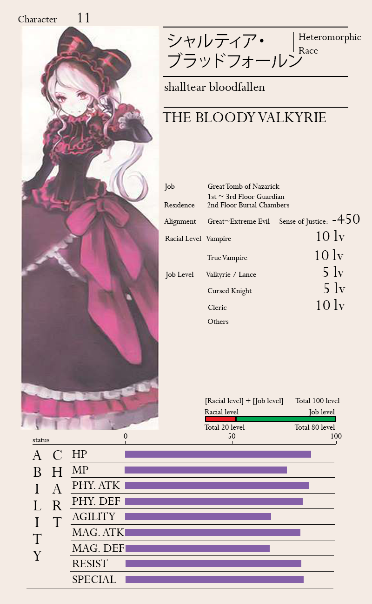

Abilities and Powers

-Shalltear is considered to be the strongest among the Floor Guardians in Nazarick, excluding Gargantua.
She has the highest overall stats among them, and her life-sustaining abilities allow her to easily outlast any one of them in single combat.
She also has the most actual combat experience of all the Floor Guardians as her position means she is the first to meet any player that invades Nazarick. It is noted by Ainz himself that she is confirmed to be a divine magic caster.
However, the god in which she believes is completely different from the gods people worship. Shalltear’s skills are divided into the at-will and limited-use types.
Shalltear's class build also makes her an extremely dangerous opponent against particular Magic Casters like Necromancers.
However, Shalltear’s magic resistance is affected by her opponent’s stats and levels. Even a 10th tier spell by a weak magic caster will not be enough to breach her resistance, but against a powerful magic caster like Ainz,
1st tier spells are the limit. According to him, Shalltear is looked upon as the best one-on-one fighter and could be used as a trump card against a strong foe.
In the Sorcerer Kingdom, Shalltear's scope of work has increased by a wide margin and she now has the responsibility to utilize her skills to gradually establish a land-based transportation network.
Tier Spells
- Animate Dead: A 3rd tier spell that creates a low-level undead, but with Shalltear's special skill, it can become a Lesser Vampire.
- Brilliant Radiance: Offensive spell, purifying the target with holy light.
- harm Species: It is a 4th tier spell that works on any species. It makes the target regard the caster as a "friend" and may be used in interrogation. However, it cannot make the target reveal secrets that they would not reveal to a friend, or perform actions that friends would not tell them to do, such as self-harm.
- Force Explosion: Sends an invisible shockwave towards the target.
- Force Sanctuary: Create a white light barrier from holy energy. Although it prevents the user from attacking, it is an absolute barrier that completely blocks the opponent’s attack.
- Gate: Summons a portal, allowing travel of a large number of people over great distances. It is considered to be the highest tier of teleportation magic. However, Shalltear needs to be supported by either Pestonya Shortcake Wanko or Entoma Vasilissa Zeta if she continually uses it.
- Greater Lethal: A divine spell with very powerful healing which involves channeling vast quantities of negative energy. It is the most powerful healing spell that Shalltear can cast on herself to greatly heal her HP.
- Greater Teleportation: A 7th tier spell that allows instantaneous transition without restriction to distance.
- Implosion: 10th tier magic. Causes the target to collapse or burst inward.
- Invisibility: A 2nd tier spell that makes the caster invisible.
- Life Essence: Allows the caster to view the health values of an enemy.
- Magic Destruction: Destroys an object made by magic. The success rate of this spell is directly dependent on the spell-casting ability of its caster.
- Mana Essence: Allows the user to learn enemy's remaining MP.
- Mass Hold Species: Constricts a large number of creatures, rendering them unable to move.
- Paralysis: Causes paralysis in the target, limiting or preventing them of physical movement, though slight physical functions are still possible, such as turning their head or speaking.
- Perfect Unknowable (Web Novel Only): A 9th tier spell which is capable of eliminating the user's traces of scent, body warmth, vibrations, prints, and various other stimulus that could trigger the enemy’s detection.
- Regenerate: A spell that provides slow healing over time.
- Resist Break: Decreases the foe's Magical resistance.
- Silence: A 2nd tier spell that negates sound in an area.
- Summon Monster 10th: A 10th tier spell that allows the user to summon a high tier monster.
- Time Accelerator: Increases speed, but the user cannot attack under the effects of the spell.
- Vermilion Nova: A 9th tier spell. It attacks the target with a pillar of flame. Deals Fire-based type of damage.
- Wall of Stone: Surrounds the user with stone walls, protecting them from damage.
Skills
- Blood Armament
- Blood Pool: A skill that creates an orb of enchanted blood that can store the blood of victims for various purposes. For instance, it can drain mana from the victim's blood. This way, one can use skills that augment spells without consuming extra MP.
- Einherjar: Shalltear's trump card. A construct-type avatar almost visually identical to Shalltear. This avatar can't use magic and some of the skills of the original, but its equipment and stats are the same.
- Mist Form: Changes the user's body into astral type, nullifying all enemy attacks, save for attacks that can hit astral entities.
- Negative Impact Shield: A reddish-black wave of force that spreads forth from the user's body. It may be used defensively against attacks, or offensively in close range. It is a skill that combines offense and defense. It may be used two times a day.
- Purifying Javelin: It is a class skill used by Shalltear to create a gigantic lance of the holy element. Despite her own evil alignment, the javelin can still cause massive damage to her foes as a holy-based ranged attack. The javelin can also inflict a curse on the target upon hitting them. Most importantly, she can spend the extra amount of MP to imbue it with perfect accuracy and tracking ability. However, it can only be used three times per day.
- Raise Kin: A skill used to summon several types of monsters, including 7th tier Vampire Wolves.
- Summon Household: A skill that allows her to summon a multitude of different familiars, such as Elder Vampire Bats, Vampire Bat Swarms, rats, Vampire Wolves, etc.
- Time Reverse: It is a skill that negate the damage caused by a single attack. The damage she sustains is instantly converted back into health. The blood spilled out after taking damage will then flow back into her body, as though time itself has reversed to render the attack completely ineffective. However, turning back time to recover damage can only be done three times a day.
Passive
- Nlood Frenzy: The more blood Shalltear's body is covered in, the stronger she becomes and her attack power soars. Because of that, she will slowly lose control of her mind and becomes unable to hold back her urge to slaughter. Without those mental brakes, Shalltear will indiscriminately massacre any prey she sees. To prevent activating it, she needs to fight while avoiding getting hit with blood and sucking it up with a weapon or other equipment.
Special Abilities
- Cold Resistance
- Creating spawn through Blood Drain
- Fast Healing
- Life Drain
- Mystic Eyes of Charms: It's a type of mind control that charms an opponent who looks into their eyes. It works on targets of the same sex as the user, not just the opposite.
- Spell Resistance: Her resistance depends on the attacker’s own strength.
- Weapon Damage Resistance
Basic Undead Race Traits
- Biological Penalties' Resistance
- Bludgeoning Vulnerability V
- Critical Hit Immunity
- Dark Vision
- Death Immunity
- Disease Immunity
- Doubled Damage by Fire
- Eating, Drinking, and Breathing are Unnecessary
- Energy Drain Immunity
- Good, Light and Holy Vulnerability IV
- ood and Holy Consecrated Areas' Vulnerability II
- Mind-affecting Immunity
- Necromancy Resistance
- Paralysis Immunity
- Physical Penalty Resistance
- Poisoning Immunity
- Recover by Negative Energy
- Sleep Immunity
|